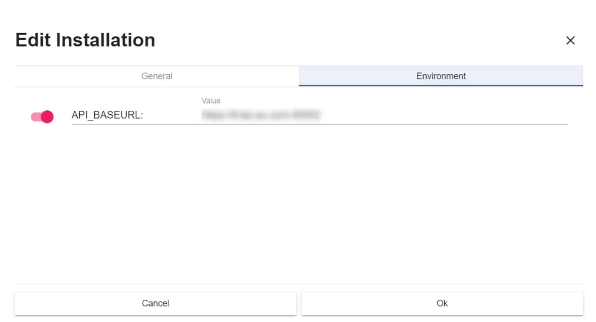
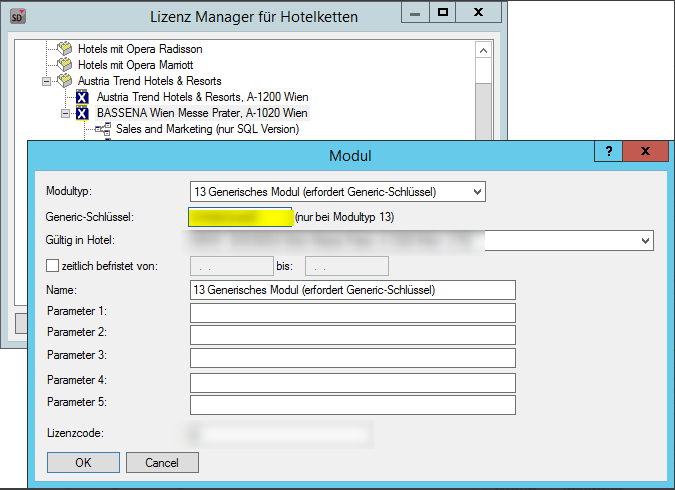
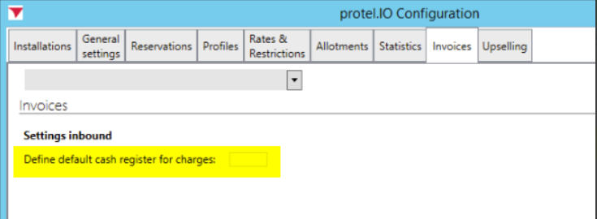
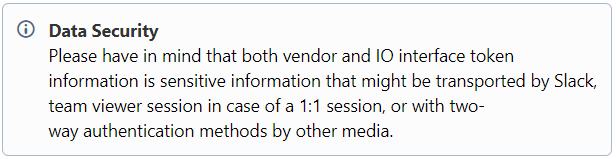
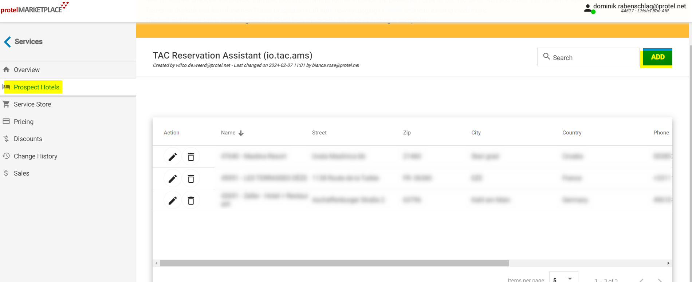

Slack Channel: #htng_tac
General phone number: +43 3332 6005 990
Support / Installer phone number: +43 3332 6005 900
General email address: office@tac.eu.com
Support / Installer email address: support@tac.eu.com
Contact persons for installations
Name | Position (Support / Installer) | Email | Slack | Phone number |
|---|
Florian Winkler | Installer/Support | F.Winkler@tac.eu.com | | no direct number |
| | Examples |
|---|
1 | Request authentication details from the Integration partner for the new installation and request them to send you the authentication details. Please provide them the HotelID as well - internally for Protel this is the CloudID Data Security Please have in mind that both vendor and IO interface token information is sensitive information that might be transported by Slack,
team viewer session in case of a 1:1 session, or with two-way authentication methods by other media. | Authentication method using specific given Endpoints for each hotel customer.
These endpoints must be provided by Hotel IT or by TAC directly. It MUST be an https:// endpoint!
(No User / no Password needed.)  |
|---|
| | If TAC does require an SSL Certificate at protel, please inform them again that this is nothing protel is dealing with.
TAC installs their software on a local machine at the client´s hotel.
The technicians of the hotel must deal with that as it has nothing to do with protel. This is about firewall settings etc.
I/O sends messages with an Amazon Root CA 1 certificate. The customer's machine needs to be set up to handle this CA.
|
|---|
2 | General Preparation On Premise | |
|---|
3 | Add licence of I/O Module to system data | Please insert:
Generic - Schlüssel : IOTAC
 |
|---|
4 | Special Xsetup configuration (general) | Group | Identifier | Value | Notes/Explanation | local/global | Comments |
|---|
pws | io_default_kasse | 0...n | TAC does post payments.
All payments done will get posted to the cashier no. which is defined between 0...n. (e.g. 99) | local | The customer should provide the information which cashier number should be used. Cashier number needs to be set up in SD |
 |
|---|
5 | Configuration needed for PDF Invoice creation for inbound charges sent by PWS
(on prem version >= 21.040 and PWS >= 3.0.x) | Note: - It is only possible to send the invoice using one template, so you should request the hotel in which template would it prefer the invoice being sent out.
|
|---|
6 | Ask the the customer whether specific payments need to be created or if TAC should use existing ones. In case new payment methods are created and if a customer would like its invoice to be fiscalized, please verify that the payment was configured properly. A list of payment methods needed to post payment during HTNG_ChargePostingRQ needs to be forwarded to TAC. | |
|---|
7 | Ask the customer for items that he wants to charge to the client´s invoice in case of transfers between TAC and protel. | |
|---|
9 | Bob installation: one for OnPremise (if not existing) and one for the Integration

| |
|---|
10 | PWS Configuration - update to the latest release version
- update I/O configuration
- Minimum requirements PMS
PMS release version ≥21.040
PWS release version ≥ 3.2.3
|
|
|---|
11 | Manual Correction (Support-Tool Use Case) |
|
|---|
| |
|
|---|
1 | PWS Configuration - enable Live Mode and activate Toggle Trigger for required message types for 1-way connection & additionally the Global Live Mode.
Message type | LiveMode | ToggleTrigger |
|---|
OTA_HotelResNotifRQ | 
|
| OTA_ProfileCreateRQ |
|
| OTA_ProfileModifyRQ |
|
|
| |
2 | Create a test reservation in the future (at least one year after the system date) & provide the reservation number to your integration partner - make a modification and finally a cancellation of your test reservation. Verify in Kibana that outgoing OTA_HotelResNotifRQ is answered by OTA_HotelResNotifRS and no error occurs.
|
|
3 | Create and start bulk upload - for reservations (OTA_HotelResNotifRQ) for the last 60 days incl. the current date.
Note: No DQE necessary. BTS Jobs will be processed one by one as only one bulk per property is allowed at the same time. Bulks should be starting with 1 January and ending with 31 of December (i.e. 01.01.2017 - 31.12.2021). Check for failed messages after the bulk upload: Manual Correction (Support-Tool Use Cases) In case you have issues with a stuck bulk upload, investigate why messages were not sent. As an option, delete the old job and create a new one. | |
| | Examples |
|---|
1 | PWS Configuration - enable LiveMode for required message types for 2-way connection
Message Type | LiveMode | Toggle Trigger |
|---|
|
|
|
|
| 
| HTNG_ChargePostingRS |
|
| OTA_ProfileReadRS | |
| OTA_ResRetrieveRS | |
|
| |
|---|
2 | FYI: Before creating test reservations clarify with the property that you will do test reservations with additional ChargePosting in order that this could be canceled afterwards so that the property is informed.
|
|
|---|
| Test incoming charges and payments HTNG_ChargePostingRQ Scenario 1: Room charges - Prepare a test reservation. The reservation should have the arrival date for today and needs to get checked in. The test does simulate an inhouse guest who is going to take services at the Spa area that get transferred to the clients invoice
- wait for the HTNG_ChargePostingRQ from TAC
- Validate if the incoming ChargePosting is displayed correctly on the clients invoice,
- Let TAC send in a cancellation afterwards and validate the values.
Scenario 2: Walk In guests for Spa
- Please create a default guest profile called "TAC payments" and exchange the profileID with TAC. A corresponding passerby invoice is going to get created once TAC pushes revenue and payments against that profileID.
- A "Walkin" to the Spa area will book his items pay the bill at the TAC machine.
- To make sure that the revenue is flowing into Onprem´s reports, the items will get charged to a passerby invoice of that default profile. Onpremise will open a passerby invoice once the item and its payment get charged against the default guest profile and will close it automatically and immediately once the bill does balance.
Please note: - The Walkin guest will get his receipt by the TAC machine after payment. This has been agreed with TAC. The passerby invoice would be not ordered.
- Please also communicate to the client, that passerby invoices coming from that flow are not supposed to get opened or touched in any case. This will prevent the dataflow to get disturbed.
- For some clients TAC needs special created methods of payments and items depending on which scenarios the client wants to use via TAC.
It has been agreed with TAC to coordinate these mappings between TAC and the client as the requested mappings can vary.
|
|
|---|
3 | Update the developer portal with the information about the installed customer To be found here: Developer portal / Development / Services / Prospect Hotels / Add |  |
|---|